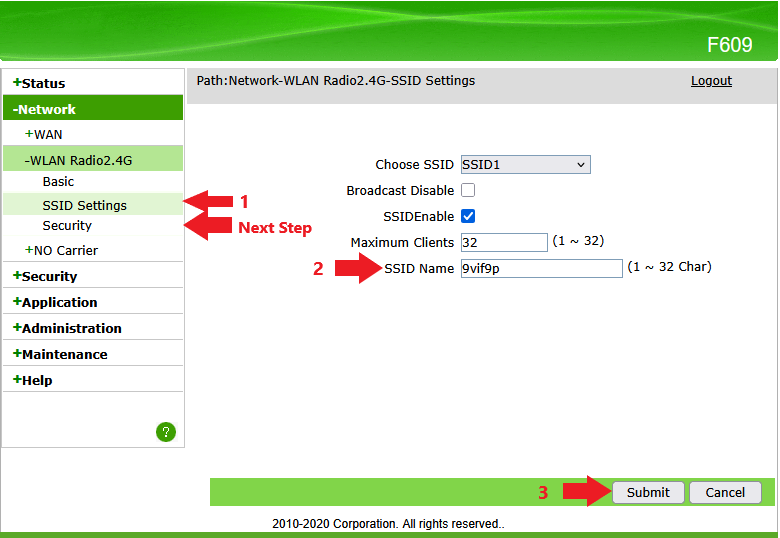
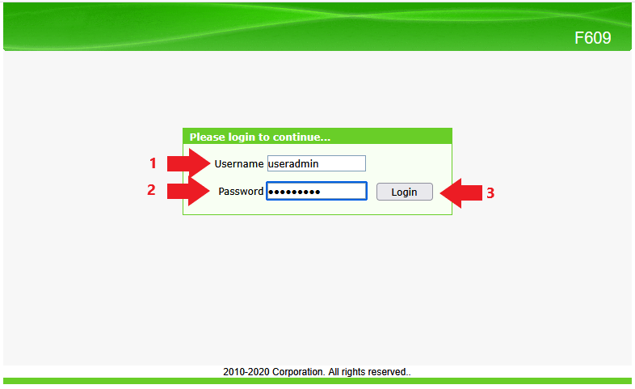
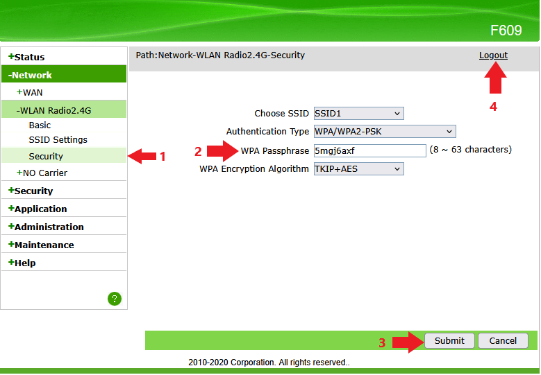

Urutan setting
Ganti nama WiFi dan password
Pastikan perangkat sudah tersambung ke WiFi modem ZTE sebelum membuka halaman login. Lalu ubah nama SSID dan password, kemudian simpan pengaturan.

1Hubungkan perangkat
Hubungkan HP atau laptop ke WiFi modem ZTE F609 yang akan diubah.
2Buka halaman login
Buka browser lalu akses http://192.168.1.1. Masukkan username dan password jika diminta.

3Masuk ke menu WLAN
Masuk ke menu Network lalu pilih WLAN atau SSID Settings.
4Ubah nama WiFi
Pada kolom SSID Name, ubah nama WiFi baru sesuai keinginan pelanggan.
5Ubah password WiFi
Masuk ke menu Security / WPA Passphrase, lalu isi password baru minimal 8 karakter.

6Simpan pengaturan
Klik Apply atau Save, lalu sambungkan ulang perangkat ke WiFi baru.